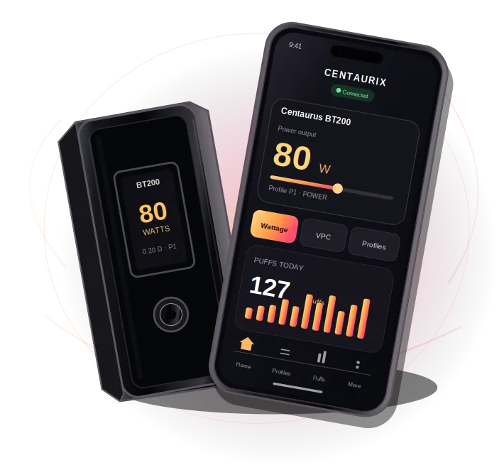
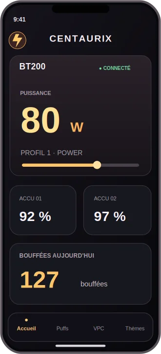
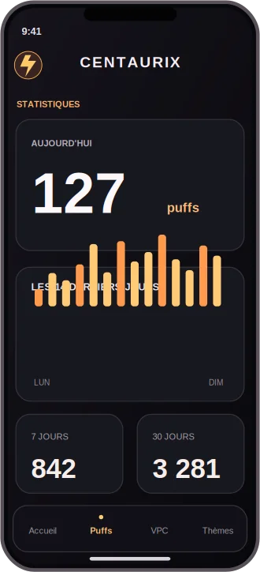
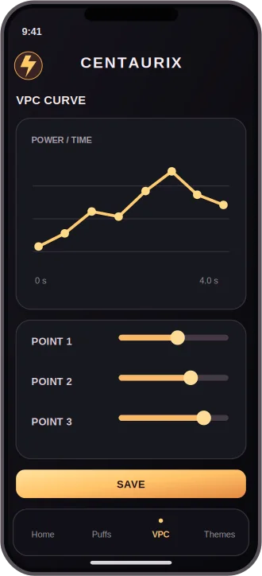
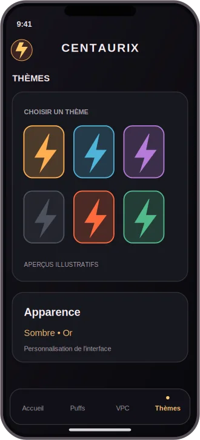

Une interface moderne
Material Design 3, cartes soignées et réglages lisibles au premier regard.
L'essentiel de votre BT200, directement sur votre téléphone. Une expérience Bluetooth fluide, claire et entièrement repensée.

Une interface qui laisse toute la place à l'essentiel : votre expérience.
Material Design 3, cartes soignées et réglages lisibles au premier regard.
Connexion Bluetooth et accès rapide aux commandes essentielles de la BT200.
Compteur quotidien, vue hebdomadaire et historique conservé sur votre téléphone.
Profils, puissance et courbes VPC dans une application pensée pour Android.
Visualisez votre box en un coup d'œil, retrouvez vos profils et suivez vos statistiques depuis un seul endroit.
Explorer l'interfaceAperçus visuels de l'expérience Android. Les écrans de démonstration peuvent différer de la version installée.




Visuels de présentation. Remplacez-les par vos captures d'écran dans docs/assets/.
Gratuit, sans compte et sans serveur. Téléchargez la dernière version disponible depuis GitHub.
Vérification des Releases et des builds GitHub Actions…
Consulter les builds Voir les builds GitHub ActionsOui. Le projet est disponible gratuitement sur GitHub.
Centaurix est conçue pour la Lost Vape Centaurus BT200. Certaines commandes Bluetooth dépendent du firmware de votre box.
Le suivi s'appuie sur le compteur cumulatif de la box. Les bouffées relevées entre deux journées hors connexion ne peuvent pas être attribuées avec certitude à une date.
Ouvrez un build terminé, téléchargez l'archive dans « Artifacts », extrayez le fichier APK et installez-le. Une Release fournit directement l'APK lorsqu'elle est disponible.
Non. Centaurix est un projet indépendant, sans affiliation avec Lost Vape.